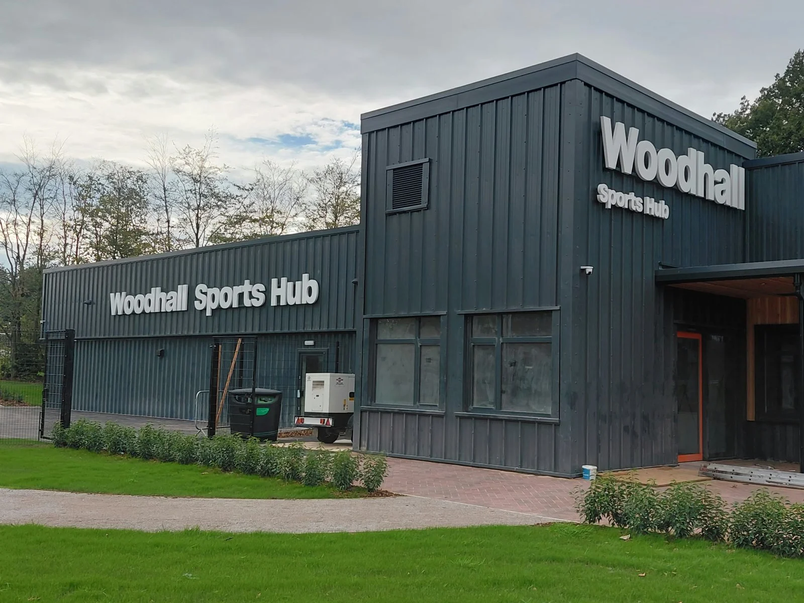

Privacy information
Your enquiry.
Your information.
How this website handles the details you choose to share with Project Cladding Services.
Updated 19 November 2026
Who to contact
This website is for Project Cladding Services, Company No. 06943807. For questions about your enquiry or personal information, email projectcladding@hotmail.co.uk or call 07733 394307.
Information in an enquiry
The enquiry form asks for your name, telephone number, service, site location and project details. Company and email fields are optional. Please provide only the information needed to discuss the work.
How the form works
The form prepares a draft in WhatsApp or your email application. It does not send the form to a website database or save the details in browser storage. You decide whether to send the draft and attach any files. WhatsApp and your email provider handle information according to their own services and privacy terms.
Using your information
Information you send is used to respond to your enquiry, discuss the project and manage any resulting work. Contact the business if you want to ask about, correct or request deletion of information you have supplied. Enquiries and project records may need to be retained where required for the work or record keeping.
Hosting and external services
The website hosting provider may process technical request information, such as IP addresses and access logs, to deliver and protect the website. Fonts are loaded from Google Fonts, which involves requests to that service. This website does not include advertising trackers, analytics scripts or embedded social-media feeds.
Cookies and browser storage
This build does not set website cookies or use local storage for tracking. External services you choose to open, including WhatsApp, may use their own cookies or storage.
Your choices
You can contact the business by telephone instead of using the form. If you have a concern about how your information has been handled, contact the business first; you can also raise a concern with the UK Information Commissioner’s Office.